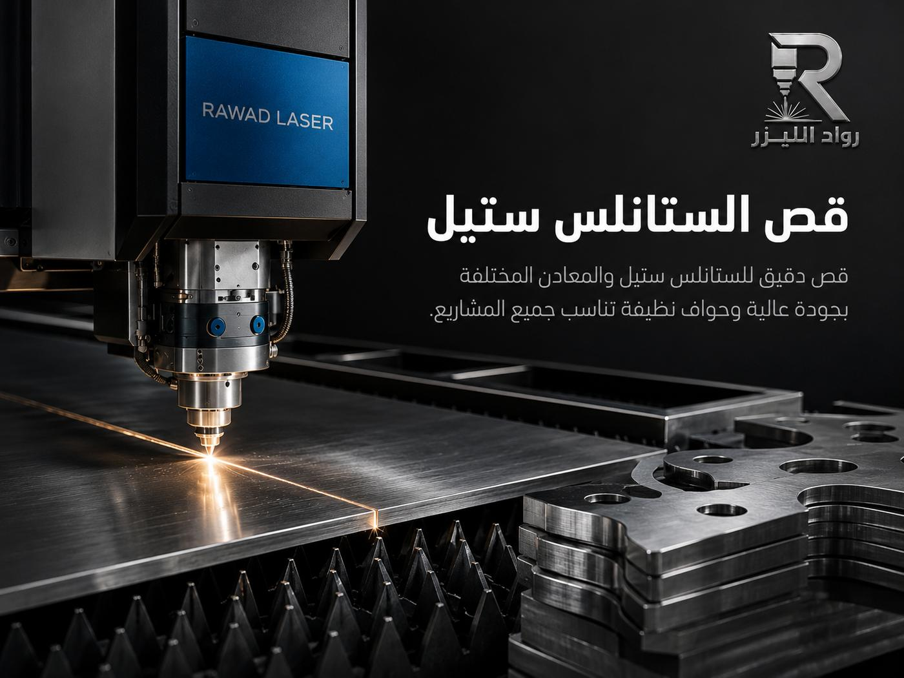
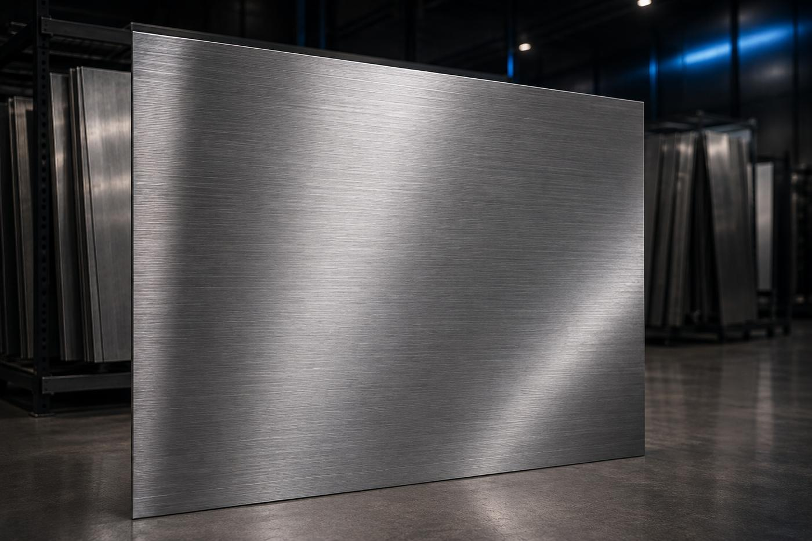

قص الصفائح والألواح المعدنية
قص ألواح الستانلس والحديد والألمنيوم إلى مقاسات وأشكال محددة: مستطيلات، دوائر، مثلثات، أو أي شكل خارجي تحدده أنت.
نقصّ الصفائح المعدنية بشعاع ليزر موجّه رقمياً: حواف نظيفة، تفاصيل معقدة، ومطابقة للمخطط بدقة تصل إلى ±0.1 مم. أرسل ملف DXF أو حتى صورة مع القياسات، ونعيد لك السعر وجدول التنفيذ.

اختر المعدن الذي تريد قصّه وانتقل إلى صفحته المتخصصة
القص بالليزر عملية حرارية يُسلَّط فيها شعاع ضوئي مركّز على سطح المعدن فيصهره ويفصله بمسار محدد مسبقاً على الحاسب. المسار يأتي من ملفك أنت — رسم هندسي أو ملف DXF — فتخرج القطعة مطابقة للمخطط بدقة تصل إلى ±0.1 مم، وتخرج نسخة رقم 500 مطابقة لنسخة رقم 1 تماماً.
الفرق العملي عن القص بالقص الميكانيكي أو البلازما أو المنشار يظهر في ثلاثة أماكن: الحافة تخرج نظيفة لا تحتاج تجليخاً في معظم الحالات، ومنطقة التأثر بالحرارة ضيقة فلا يتشوّه اللوح، والتصميم لا يقيّدك — الفتحات الدقيقة والزوايا الحادة والزخارف المفرّغة تُنفّذ بنفس سهولة تنفيذ مستقيم.
وهذا يعني وفراً حقيقياً في وقت التشطيب وفي كمية المعدن المستهلك، لأن ترتيب القطع على اللوح (Nesting) يُحسب رقمياً قبل بدء القص لتقليل الهدر إلى أدنى حد ممكن — وهو ما ينعكس مباشرة على السعر الذي نقدّمه لك.
وإن لم يكن لديك ملف جاهز، أرسل رسماً باليد أو صورة للقطعة القديمة مع القياسات الأساسية، ونساعدك في تحويلها إلى ملف قص صالح للتنفيذ قبل أن نبدأ.
ستة أنواع من الطلبات تغطي معظم ما يصلنا يومياً — ولكل نوع أسلوب تحضير مختلف قبل القص.
قص ألواح الستانلس والحديد والألمنيوم إلى مقاسات وأشكال محددة: مستطيلات، دوائر، مثلثات، أو أي شكل خارجي تحدده أنت.
الأشكال الإسلامية والزخارف الهندسية والكتابة المفرّغة والشعارات — تفاصيل صغيرة تحتاج شعاعاً رقيقاً ومساراً محسوباً.
فلانشات، ألواح تثبيت، كراسي، وقطع غيار تُقصّ بمواقع فتحات ومحاور مضبوطة كما في الرسم — لا تقريب ولا اجتهاد.
تريد تجربة فكرة قبل الإنتاج؟ نقصّ لك نموذجاً واحداً لتراه وتلمسه وتعدّل عليه قبل الالتزام بأي كمية.
دفعات متكررة بنفس الملف ونفس المواصفة، مع ترتيب القطع على اللوح لتقليل الهدر وتثبيت التكلفة لكل قطعة.
مشاريع الكميات والمقاولاتقص مع حساب خطوط الثني وبدلات الطي مسبقاً، حتى تخرج القطعة بعد التشكيل بالمقاس النهائي المطلوب لا بمقاس اللوح المسطح.
خدمة التشكيل والثنيلكل معدن سلوك مختلف تحت الليزر ونتيجة مختلفة على المدى الطويل. هذا ملخص سريع يساعدك على القرار، ولكل معدن صفحة مفصّلة.
| المعدن | ما يميّزه عند القص بالليزر | الاستخدام الأنسب له |
|---|---|---|
| ستانلس ستيل 304 / 316 | حافة نظيفة لامعة ومقاومة للتأكسد، ويحتاج غازاً مناسباً للحصول على حافة بلا تأكسد. | المطابخ والمطاعم، الأدوات الطبية، الواجهات، وكل ما يلامس الماء أو الغذاء. |
| حديد أسود / كربوني | أسهل المعادن قصاً وأوفرها سعراً، لكنه يصدأ إن لم يُطلَ أو يُجلفن بعد القص. | الهياكل والقواعد والعناصر الإنشائية والقطع التي ستُطلى أو تُدفن داخل تجميع. |
| ألمنيوم | خفيف وعاكس للحرارة، يحتاج ضبطاً أدق للقدرة والسرعة لتجنّب النتوءات على الحافة السفلية. | اللافتات، الأجزاء المتحركة، حيث يهم الوزن أو مقاومة التآكل بلا طلاء. |
| نحاس وبراص | معادن عالية الانعكاس والتوصيل الحراري، وتُقصّ بليزر الفايبر بإعدادات خاصة. | الديكور الفاخر، الشعارات، اللوحات، والقطع الكهربائية الموصّلة. |
| صفائح مجلفنة | طبقة الزنك تحمي من الصدأ لكنها تتأثر عند حرارة القص، لذا نحسب موضع القص والتشطيب بعده. | أعمال التكييف والدكتات، الأسقف، والقطع المعرّضة للرطوبة بميزانية محدودة. |
السماكات المتاحة تختلف حسب نوع المعدن وحسب الطلب — أرسل لنا السماكة والمقاس المطلوب ونؤكد لك القابلية والسعر قبل البدء.
 قص لوح ستيل
قص لوح ستيل
قص ستانلس ستيل قطع مقصوصة
قطع مقصوصة قطع حسب المخطط
قطع حسب المخطط زخارف مفرّغة
زخارف مفرّغة
ألواح جاهزةالصور نماذج وتصورات بصرية توضح إمكانيات الخدمة وتطبيقاتها.
قطعة توقّف عن العمل ولا تجد بديلها؟ نقصّ نسخة مطابقة من الأصل أو من الرسم لتعود الماكينة للعمل.
حروف وشعارات مقصوصة بالليزر بحواف حادة تُثبَّت على واجهة أو جدار داخلي وتدوم سنوات.
ألواح تثبيت، مشبكات، فواصل، ودرابزين مقصوص حسب مقاسات الموقع لا حسب المقاس الجاهز.
لوحة باسم، تصميم شخصي، أو قطعة فنية واحدة — نقبل الطلب الفردي دون شروط كمية.
مسار واضح من أربع خطوات، تعرف في كل واحدة منها ماذا يحدث ومتى.
عبر واتساب أو نموذج الصفحة: ملف DXF أو DWG أو PDF، أو صورة واضحة مع القياسات ونوع المعدن والسماكة.
نفحص الملف: أقطار الفتحات، الزوايا الحادة، والمسافات بين القطع — ونخبرك إن كان هناك تعديل يوفّر عليك مالاً أو يحسّن النتيجة.
نرتّب القطع على اللوح لتقليل الهدر، ثم يبدأ القص عادةً خلال 6 ساعات من اعتمادك للسعر.
نقيس القطع، ونتحقق من نظافة الحواف وإزالة النتوءات، ثم نسلّم في الموعد المتفق عليه.
نقرأ ملفك كما هو، ونراجع معك أي نقطة غير واضحة قبل القص لا بعده.
قطعة واحدة طلب مقبول تماماً، وتُعامل بنفس دقة طلب من خمس مئة قطعة.
عرض سعر سريع، بدء تنفيذ خلال 6 ساعات من الاعتماد، وموعد تسليم نلتزم به.
كل دفعة تُقاس وتُفحص حوافها قبل التسليم، ولا تخرج قطعة خارج المواصفة.
القص خطوة واحدة في دورة التصنيع — وهذه الخطوات التي تليها عادةً.
تحويل القطعة المسطّحة إلى شكل ثلاثي الأبعاد بزوايا مضبوطة جاهزة للتركيب.
اذهب إلى الصفحةإضافة شعار أو رقم تسلسلي أو كود QR على القطعة بنقش دائم لا يبهت.
اذهب إلى الصفحةتلميع، إزالة حواف، ومطابقة قياسات قبل التسليم لتصل القطعة جاهزة للاستخدام.
اذهب إلى الصفحةليزر الفايبر هو المستخدم اليوم في قص المعادن: طوله الموجي يُمتَص في المعدن بكفاءة أعلى، فيقصّ أسرع ويتعامل مع المعادن العاكسة كالنحاس والألمنيوم بأمان أكبر. أما CO2 فمجاله الأساسي المواد غير المعدنية كالأكريليك والخشب.
نعم. يكفي رسم يدوي واضح أو صورة للقطعة القديمة مع القياسات الأساسية، ونحوّلها إلى ملف قص. الفرق أن الملف الجاهز (DXF أو DWG) يوفّر وقتاً في التحضير وقد يقلّل السعر.
في معظم الحالات لا: الحافة تخرج نظيفة ومستقيمة. وعند وجود نتوءات بسيطة على السماكات الأعلى نزيلها في مرحلة التشطيب قبل التسليم، ويمكنك أيضاً طلب تلميع أو تنعيم حواف إضافي.
المقاسات والسماكات المتاحة تختلف حسب نوع المعدن والطلب. أرسل لنا المقاس والسماكة المطلوبة ونؤكد لك القابلية والسعر قبل أي التزام — ولا نبدأ التنفيذ قبل تأكيد ذلك كتابياً.
نخدم جدة ومنطقة مكة المكرمة بشكل أساسي، بما فيها مكة المكرمة. وللمشاريع خارج المنطقة يمكن التنسيق حسب حجم الطلب — راسلنا وسنوضح لك الخيارات المتاحة.
املأ النموذج وسنرد عليك بعرض سعر واضح وجدول تنفيذ محدد — بدون أي التزام.
أرسل الملف أو القياسات الآن، واحصل على سعر واضح وموعد تنفيذ محدد — بدون أي التزام.